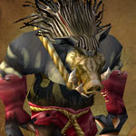
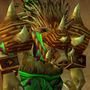
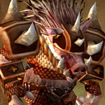
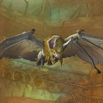
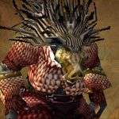

You can find the Razorfen Kraul dungeon within Southern Barrens, Kalimdor.
The coordinates are (41.0,94.3)

Route:
Map 1

Bosses:
1. Hunter Bonetusk2. Roogug3. Warlord Ramtusk4. Groyat, the Blind Hunter5. Charlga Razorflank

Quick Boss Tactics:/i Move away from the circle of arrows fired on floor. Barrage fires arrows at target. At 50% health boss calls the Boars to run through damaging all in path.

Quick Boss Tactics:Avoid standing in the totems spells (green & yellow circles on floor). Interrupt Woven Elements.

Quick Boss Tactics:/i You cannot leave the circle. Take out the adds. Run away from Spirit Axe, lands on floor.

Quick Boss Tactics:/i Move away from Sonic Field (circle on ground). Run between the circles of Sonic Charge. Drain Life bites a target inflicting damage & leeching health.

Quick Boss Tactics:/i Run away to avoid being pulled in by the blue crystal. Green crystal spawns ooze mobs, avoid standing near the green puddles. Red crystal inflicts fire damage to anyone hit by the lines. Careful of Elemental Binding, roots you in place.